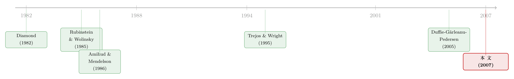

价格里那道折扣，量的是「找不到买家」的时间
本文读的是 Duffie, Gârleanu & Pedersen (2007, Review of Financial Studies)：在一个交易必须先「找到对手盘」、价格又靠双边讨价还价定下来的场外市场里，资产的折价并不是凭空冒出来的「流动性溢价」，而是可以被一个动态均衡显式地解出来的——它随搜寻越难、卖方议价力越弱、合格买家越少、风险厌恶或波动越高而越大；当一记总量冲击袭来，价格会先「跳水」、再「慢慢爬回来」，而这条恢复曲线的陡缓，恰恰被搜寻摩擦放大。
1 一个被教科书悄悄跳过的问题
我们先从一个几乎所有资产定价课都默认、却很少有人较真的假设说起：你随时都能以「市场价」把手里的东西卖掉。
这个假设对交易所里的大盘股大概还说得过去。可现实里，绝大多数资产并不长这样。抵押贷款支持证券、公司债、政府债、联邦基金、新兴市场主权债、银行贷款、互换、私募股权、房地产——这些动辄占据金融体系半壁江山的东西，都是在场外市场 (over-the-counter, OTC) 里交易的。在这样的市场里，没有一块挂着实时报价的大屏幕，你得先去找一个愿意接盘的人；找到了，价格还不是给定的，而是你俩坐下来，根据各自「不成交又能怎样」的退路，讨价还价敲定的。
于是一个很自然、却长期被回避的问题浮出来：如果「找对手」要花时间、「定价格」靠议价，那这两件事本身，会给资产价格留下什么样的印记？
过去的文献其实给过一个「偷懒」的答案：直接往模型里塞一个外生的交易成本（比如买卖价差），然后看它怎么压低价格、抬高预期收益。Amihud 和 Mendelson (1986)、Constantinides (1986)、Vayanos (1998)、Acharya 和 Pedersen (2005) 走的都是这条路。这条路当然有用，但它把最有意思的那一步——交易成本本身从哪儿来——当成了输入，而非输出。
这篇论文要做的，恰恰是把这个「黑箱」打开：不预设任何交易成本，而是让它从搜寻和议价的均衡里自己长出来。
2 一个尽可能简单的世界
要把这件事讲清楚，作者先搭了一个简到不能再简的risk-neutral基准模型（第 1 节）。
世界里有一个连续统 (continuum) 的投资者，都是风险中性、永生的，时间偏好率 \(\beta>0\)。有一种长期资产，为简单起见就设成一张永续债 (consol)，每单位时间派息 1 单位消费品。还有一个无风险利率为 \(r\) 的银行账户；因为大家风险中性，直接令 \(r=\beta\)。
关键在于，每个投资者对「持有这个资产」的内在偏好有高、低两种。低类型 (low) 的持有者，每单位时间要付一份持有成本 \(\delta\)；高类型 (high) 则没有。 你可以把 \(\delta\) 想成一个影子价格：可能是急需现金、可能是融资/财务困境成本高、可能是资产收益和自己的禀赋相关性变差（第 2 节会把这点正式化成对冲动机）、也可能是税收劣势。
每个人的内在类型是一条马尔可夫链：以强度 \(\lambda_u\) 从低跳到高，以强度 \(\lambda_d\) 从高跌回低。正是这些跳动制造了交易的动机——低类型的持有者想卖，高类型的非持有者想买。
把「内在类型 × 是否持有」组合起来，全部人就被分成四类：
$$ T=\{ho,\;hn,\;lo,\;ln\} $$
其中 h/l 指当前内在类型高/低，o/n 指当前是否持有资产。记 \(\mu_\sigma(t)\) 为 \(t\) 时刻 \(\sigma\) 类型的人口占比，于是
$$ 1=\mu_{ho}(t)+\mu_{hn}(t)+\mu_{lo}(t)+\mu_{ln}(t). $$
人均供给 \(s\) 等于持有者占比：\(s=\mu_{ho}(t)+\mu_{lo}(t)\)。
现在轮到这个模型的灵魂：搜寻。 每个人以强度 \(\lambda\) 随机碰到另一个人，\(\lambda\) 衡量搜寻技术的效率。碰到的对手是从人群里随机抽的，所以碰到 \(\sigma\) 类型的强度是 \(\lambda\mu_\sigma\)。由大数定律，整个市场里 \(lo\) 和 \(hn\) 之间「真正能成交」的相遇总速率是 \(2\lambda\mu_{lo}\mu_{hn}\)。
3 先别管价格——先看资产流到了哪里
这里有一个非常漂亮的解题思路：先不谈价格。
为什么可以？因为唯一能产生交易收益的相遇，就是「低类型持有者」遇上「高类型非持有者」。由议价理论可知，这种相遇会立刻成交。既然成交与否不取决于价格高低（只要有交易收益就成交），那资产在四类人之间的流动，就可以脱离价格单独解出来。
于是各类人口占比的演化满足（论文式 3）：
$$ \begin{aligned} \dot\mu_{lo}(t)&=-2\lambda\mu_{lo}(t)\mu_{hn}(t)-\lambda_u\mu_{lo}(t)+\lambda_d\mu_{ho}(t)\\ \dot\mu_{hn}(t)&=-2\lambda\mu_{hn}(t)\mu_{lo}(t)-\lambda_d\mu_{hn}(t)+\lambda_u\mu_{ln}(t)\\ \dot\mu_{ho}(t)&=2\lambda\mu_{hn}(t)\mu_{lo}(t)-\lambda_d\mu_{ho}(t)+\lambda_u\mu_{lo}(t)\\ \dot\mu_{ln}(t)&=2\lambda\mu_{hn}(t)\mu_{lo}(t)-\lambda_u\mu_{ln}(t)+\lambda_d\mu_{hn}(t) \end{aligned} $$
第一行的直觉很干净：每当一个 \(lo\) 碰到一个 \(hn\)，他就把资产卖了、不再是 \(lo\)——这（连同大数定律）就是右边第一项 \(-2\lambda\mu_{lo}\mu_{hn}\)；第二项是内在类型从低变高（\(lo\to ho\)）；第三项是从高跌回低（\(ho\to lo\)）。其余三式同理。
作者证明这个系统有唯一稳定的稳态（\(\dot\mu=0\)），且可借助 \(\mu_{lo}+\mu_{ln}=\lambda_d/(\lambda_u+\lambda_d)\) 把它化成一个关于 \(\mu_{lo}\) 的二次方程解出。这是全篇能「闭式」推进的关键一步：人口分布先定下来，价格才好谈。
4 真正关键的一步：把价格从议价里解出来
人口分布有了，接下来才轮到价格。
每个人的终身效用写成 \(W(t)+V_{\sigma(t)}\)，其中 \(W\) 是银行账户财富，\(V_\sigma\) 是与类型 \(\sigma\) 绑定的一个待定常数。稳态下，任何人的期望间接效用增长率都得等于贴现率 \(r\)，于是有四条稳态方程（论文式 4）：
$$ \begin{aligned} 0&=rV_{lo}-\lambda_u(V_{ho}-V_{lo})-2\lambda\mu_{hn}(P-V_{lo}+V_{ln})-(1-\delta)\\ 0&=rV_{ln}-\lambda_u(V_{hn}-V_{ln})\\ 0&=rV_{ho}+\lambda_d(V_{ho}-V_{lo})-1\\ 0&=rV_{hn}+\lambda_d(V_{hn}-V_{ln})-2\lambda\mu_{lo}(V_{lo}-V_{ho}-P) \end{aligned} $$
价格 \(P\) 怎么定？靠双边议价。一个高类型非持有者，最多愿意付出他的保留价值 \(\Delta V_h=V_{ho}-V_{hn}\) 来拿下资产；一个低类型持有者，至少要 \(\Delta V_l=V_{lo}-V_{ln}\) 才肯放手。纳什议价（或附录里的 Rubinstein 式博弈）给出成交价（论文式 5）：
$$ P=\Delta V_l\,(1-q)+\Delta V_h\,q, $$
其中 \(q\in[0,1]\) 是卖方的议价力。直觉上，价格就落在卖方底线 \(\Delta V_l\) 和买方上限 \(\Delta V_h\) 之间，由议价力 \(q\) 决定偏向谁。
这里有一处特别精巧的设计。议价力 \(q\) 不必外生假设——作者用 Rubinstein 和 Wolinsky (1985) 的办法，把它作为一串「交替出价、间隔趋于零」的博弈的极限价格解出来。结论很反直觉：如果双方在谈判期间还能继续去找别的对手，那唯一重要的「议价优势」就只是「下一个由谁出价」的概率 \(\hat q\)，于是 \(q=\hat q\)。因为「能去找别人」让你自己更没耐心，但也同时抬高了对手谈崩的风险，这两个力量恰好互相抵消。
而如果谈判期间不能再搜寻，议价力就变成（论文式 6）：
$$ q=\frac{\hat q\,(r+\lambda_u+\lambda_d+2\lambda\mu_{lo})}{\hat q\,(r+\lambda_u+\lambda_d+2\lambda\mu_{lo})+(1-\hat q)\,(r+\lambda_u+\lambda_d+2\lambda\mu_{hn})}. $$
把式 (4)–(5) 这套线性系统解出来，就得到全文的中心结果（论文式 7）：
$$ P=\frac{1}{r}-\frac{\delta}{r}\cdot\frac{r(1-q)+\lambda_d+2\lambda\mu_{lo}(1-q)}{r+\lambda_d+2\lambda\mu_{lo}(1-q)+\lambda_u+2\lambda\mu_{hn}q}. $$
这个式子值得我们逐块拆开看——它就是这篇论文要讲的「一个核心」：
一句话读懂式 (7)：价格 = 没有摩擦时的现值 1/r，减去一道「流动性折扣」。 而这道折扣的大小，完全由搜寻强度 \(\lambda\)、议价力 \(q\)、以及各类人口占比内生决定。把交易成本「解」出来，而不是「塞」进去——这正是这篇论文区别于此前所有外生成本文献的地方。
5 比较静态：折扣随什么而变
有了式 (7)，比较静态就水到渠成。作者的 命题 1 说：稳态均衡价 \(P\) 关于 \(\delta\)、\(s\)、\(\lambda_d\) 递减，关于 \(\lambda_u\) 和 \(q\) 递增。翻成人话：
- 持有成本 \(\delta\) 越高，折扣越大——这几乎是定义。
- 资产/合格买家之比 \(s\) 越大，折扣越大——东西太多、接盘的高类型太少。
- 越容易突然自己也需要流动性（\(\lambda_d\) 越大），折扣越大——买家担心自己接了盘转头又得急着脱手。
- 越容易「恢复」（\(\lambda_u\) 越大），折扣越小——困境是暂时的，价格更接近无摩擦水平。
- 卖方议价力 \(q\) 越高，价格越高。
而最点题的是关于搜寻强度 \(\lambda\) 的那条：在 \(s<\lambda_u/(\lambda_u+\lambda_d)\) 的条件下，当 \(\lambda\to\infty\)（摩擦消失），\(P\to 1/r\)，流动性折扣彻底归零，OTC 价格收敛到瓦尔拉斯 (Walrasian) 无摩擦价。 这给了「流动性折价」一个干净的极限锚点。
但故事还有一个反转。如果 \(s>\lambda_u/(\lambda_u+\lambda_d)\)，无摩擦下的边际投资者反而是「保留价值较低」的那一方，搜寻摩擦此时会制造出一个稀缺溢价 (scarcity value)：一个高类型投资者在不流动的市场里，可能愿意付高于瓦尔拉斯价的钱，因为这东西太难找、又没法享受「多个卖家同时竞争」的好处。作者指出，这或许能部分解释国债里被反复研究的 on-the-run 溢价。也就是说，搜寻摩擦既能压低价格，也能在另一种参数下抬高价格——方向取决于「资产相对合格买家是多还是少」。
6 当风险厌恶进场：折扣怎么被放大
第 1 节里 \(\delta\) 是凭空设的。第 2 节作者把它「内生」成了真正的对冲动机。
投资者改成常绝对风险厌恶 (constant absolute risk aversion, CARA)，风险厌恶系数 \(\gamma\)，时间偏好 \(\beta\)。资产的累积红利是带噪声的：
$$ dD(t)=m_D\,dt+\sigma_D\,dB(t), $$
每个投资者 \(i\) 还有一份累积禀赋 \(\eta^i\)，
$$ d\eta^i(t)=m_\eta\,dt+\sigma_\eta\,dB^i(t),\qquad dB^i(t)=\rho^i(t)\,dB(t)+\sqrt{1-\rho^i(t)^2}\,dZ^i(t). $$
这里的 \(\rho^i(t)\) 是「资产红利」和「自己禀赋」之间的瞬时相关性，被建成一条两状态马尔可夫链，取值 \(\rho_h\) 和 \(\rho_l>\rho_h\)。高内在类型的人相关性更低 \(\rho_h\)，所以更看重这个资产（它能更好地对冲自己的禀赋风险）。每个人持有 \(\theta_o\) 或 \(\theta_n\) 单位（\(\theta_n<\theta_o\)）。这一下，第 1 节里抽象的「高/低类型」就有了血肉：交易动机来自两个人对冲收益的差异。
money-market 财富过程为（论文式 13）：
$$ dW(t)=(rW(t)-c(t))\,dt+\theta(t)\,dD(t)+d\eta(t)-P\,d\theta(t). $$
对 \(lo\) 类型的 Hamilton-Jacobi-Bellman (HJB) 方程是（论文式 14）：
$$ \begin{aligned} 0=\sup_{c\in\mathbb{R}}\Big\{&-e^{-\gamma c}+J_w(w,lo)(rw-c+\theta_o m_D+m_\eta)\\ &+\tfrac12 J_{ww}(w,lo)\big(\theta_o^2\sigma_D^2+\sigma_\eta^2+2\rho_l\theta_o\sigma_D\sigma_\eta\big)-\beta J(w,lo)\\ &+\lambda_u[J(w,ho)-J(w,lo)]+2\lambda\mu_{hn}[J(w+P\theta,ln)-J(w,lo)]\Big\}, \end{aligned} $$
其中 \(\theta=\theta_o-\theta_n\)。妙处在于 CARA 让间接效用有干净的指数解（论文式 15、16）：
$$ J(w,\sigma)=-e^{-r\gamma(w+a_\sigma+a)}, $$ $$ a=\frac{1}{r}\left[\frac{\log r}{\gamma}+m_\eta-\frac12 r\gamma\sigma_\eta^2-\frac{r-\beta}{r\gamma}\right]. $$
财富 \(w\) 和「与类型无关的常数 \(a\)」从指数里分离出来，剩下一组关于 \(a_\sigma\) 的方程刻画四类人的价值。最优消费也随之是线性的（论文式 17）：
$$ c=-\frac{\log(r)}{\gamma}+r(w+a_\sigma+a). $$
这一节最重要的结论，不在公式本身，而在它把第 1 节合理化了：风险厌恶下的均衡，可以被解释成一个带「持有成本 \(\delta\)」的风险中性经济，其中 \(\delta\) 正好捕捉了「次优对冲/分散」带来的效用损失。于是命题 1 的全部比较静态都延续下来，而且多了一句关键的话——搜寻造成的市场不完备，是被风险厌恶的投资者「定价」的：当波动 \(\sigma_D\) 更高、风险厌恶 \(\gamma\) 更大、对冲需求更强时，折扣会被进一步放大。换句话说，搜寻摩擦不只是一笔「过路费」，它会和风险分担的不完备相互叠加、彼此放大。（关于「无风险标的上做市商为何也会因风险限额而留下价差」这条相邻的暗线，可参见《无风险市场里的风险厌恶》。）
7 跳水与爬升：总量冲击的「时间签名」
如果说前面讲的是「价格的水平」，第 3 节讲的就是「价格的动态」——也是这篇论文最有现实穿透力的部分。
作者引入总量流动性冲击 (aggregate liquidity shock)：一记同时把许多人推成低类型的打击（比如一大批对冲基金同时遭遇赎回）。冲击发生时会出现两件事：一是被迫卖出的人变多、想买的人变少，二是卖家的议价地位变差。于是价格先跳水。
然后呢？市场不会瞬间复原。价格的「恢复」要等两件慢事：困境的卖家自己慢慢「回血」（以 \(\lambda_u\) 的速度变回高类型，比如重新募到资本），以及资产通过受限于搜寻摩擦的交易，慢慢从困境卖家手里重新配置到潜在买家手里。
这条「跳水—缓慢爬升」的时间曲线，正是这篇论文给出的、可证伪的核心预测：市场越不流动（\(\lambda\) 越小），价格跳得越深、爬得越慢。 而且对未来还会有总量冲击的「恐惧」，会持续压低恢复后的价格水平。一个有意思的副产品是：冲击发生时，那些手里没有头寸、在场边观望的人，期望效用反而上升了——因为他们可能有机会以「跳楼价」捡漏。
作者把这条时间签名对到了一长串真实市场上：可转债基金 2005 年集中赎回时可转债价格的「跌—弹」[Mitchell, Pedersen & Pulvino (2007)]、公司债遭遇大幅降级或违约时的折价与延迟恢复 [Hradsky & Long (1989)]、主权债危机、指数纳入/剔除时的个股反应 [Greenwood (2005)]、巨灾再保险在飓风等重大损失后的「先涨后多年回落」[Froot & O'Connell (1999)]。Newman 和 Rierson (2003) 更直接借用本文框架，解释了 1999–2002 年欧洲电信债在大额发行后整个板块信用利差暂时鼓包的现象。（这条「危机里价格如何跌、谁来接、又如何恢复」的实证脉络，今天仍在延续，可参见《差点死掉的那个市场》与《谁来接住这一大笔债券？》。）
第 4 节还顺手解释了几个「标准信息不对称模型搞不定」的折价：受限股 (restricted stock) 平均 30% 的折价、且折价随发行相对规模递增 [Silber (1991)]；中国的「限制性机构股」(RIS) 相对同权交易所股票高达约 80% 的折价 [Chen & Xiong (2001)]。两类股票现金流完全相同、公开价格还看得见，唯一的区别就是能不能自由交易——这正是搜寻摩擦该唱主角的地方。
8 文献脉络
把这篇论文放回它的来路，故事其实横跨了三块原本互不相干的领域。
搜寻这套语言，最早不是为资产定价造的。它起家于劳动经济学——Diamond (1982) 那个著名的「椰子 (coconuts)」模型，讲的是人们如何在摩擦中寻找交易机会；随后又被搬进货币经济学 [Trejos & Wright (1995)]。议价这一半的微观基础，则来自 Rubinstein 和 Wolinsky (1985)——本文正是用它把议价力 \(q\) 内生出来的。

而把搜寻+议价真正嫁接到资产定价上的，是本文几位作者自己。Duffie, Gârleanu 和 Pedersen (2005) 先建了一个带做市商、聚焦买卖价差的基准搜寻模型；本文 (2007) 则把做市商剥掉、转而处理三件那篇没碰的事：(i) 风险厌恶在搜寻环境下对价格的影响（超出一般不完备市场的风险分担之外）；(ii) 搜寻摩擦如何决定价格对供需冲击反应的时间动态；(iii) 基于买卖双方搜寻机会的内生议价力。这条线随后开枝散叶：Weill (2002) 与 Vayanos 和 Wang (2007) 把模型推广到多资产、得到收益的横截面约束；Newman 和 Rierson (2003) 用它做公司债；Gârleanu 和 Pedersen (2007) 把它接到风险管理约束上。
与此同时，本文也和「外生交易成本」那一支文献 [Amihud & Mendelson (1986)、Constantinides (1986)、Vayanos (1998)、Acharya & Pedersen (2005)] 形成互补——后者把交易成本当输入，本文把它内生为 OTC 搜寻的产物。
9 评论与延伸（Q&A + 研究方向）
(a) 几个可能的疑问
Q：这和「往模型里塞一个买卖价差」到底有什么本质不同？
区别在因果方向。外生成本文献把交易成本写成参数 \(\tau\)，再看它怎么影响价格；本文不设任何 \(\tau\)，价格折扣 \(\frac{\delta}{r}\cdot(\cdot)\) 是从搜寻强度 \(\lambda\)、议价力 \(q\) 和人口动态里解出来的。好处是：折扣会随市场状态（谁多谁少、危机有没有来）内生地变动，还能预测「跳水—恢复」的时间路径——这是固定 \(\tau\) 给不出的。
Q：「持有最多一单位、不能卖空」这个假设是不是太强了？
是个真实的代价。它让人口分布能被一个二次方程闭式刻画，是全篇可解的关键。作者也坦承这「牺牲了一般性」，并引用 Gârleanu (2006) 说明：在允许更一般持仓、且投资者不能连续进入市场的版本里，持仓选择可以被完全内生化，定性结论仍然成立。但水平上的量级会受这个简化影响。
Q：议价力 \(q=\hat q\) 那个「两效应恰好抵消」的结论，可信吗？
它是一个极限结果（出价间隔趋于零），且依赖「谈判期间还能继续搜寻」这一具体假设。换一个假设（谈判期间不能搜寻），\(q\) 就变成式 (6) 那个依赖于 \(\mu_{lo}\)、\(\mu_{hn}\) 的复杂表达式。作者在比较静态里特意选用 \(q=\hat q\) 的版本，正是为了避免 \(q\) 随实验参数一起漂移、把比较静态搞浑——这是一个为了「干净」而做的建模取舍，读者要心里有数。
Q：为什么搜寻摩擦有时压低价格、有时反而抬高价格？
取决于无摩擦下的边际投资者是谁。当 \(s<\lambda_u/(\lambda_u+\lambda_d)\)，边际持有者是无持有成本的高类型，瓦尔拉斯价就是 \(1/r\)，摩擦只会往下压（流动性折扣）。当 \(s>\lambda_u/(\lambda_u+\lambda_d)\)，资产相对合格买家太「稀缺」，高类型买家因找不到、又无法逼出卖家间的竞争，愿意付高于瓦尔拉斯的价——这就是稀缺溢价，作者用它去对 on-the-run 溢价。
Q：模型说危机时「场边观望者」效用上升，这是 bug 还是 feature？
是 feature，而且是可证伪的含义。总量冲击恶化了在场卖家的处境（搜寻时间变长、议价地位变差），却同时给空仓者创造了低价捡漏的机会。这预测了危机中「逆向接盘者」的存在与其超额回报——现实里危机期的 distressed buyer 行为与此吻合。
Q：这个稳态框架能直接拿去估实证参数吗？
不能直接。它给的是定性比较静态和时间签名，不是一个待估的结构方程组。要落到数据上，需要先把 \(\lambda,\lambda_u,\lambda_d,\delta,q\) 映射到可观测量（成交频率、持有期、价差、恢复半衰期），再用某个 OTC 市场（公司债 TRACE、repo specials）去识别——这正是后续文献和下面研究提案要做的事。
(b) 几个可能的研究问题与提案
1. 把「跳水—恢复半衰期」结构化估到公司债上。 【经济故事】本文预测价格恢复速度由搜寻强度 \(\lambda\) 和回血率 \(\lambda_u\) 共同决定，且越不流动的债恢复越慢。这是一个能被直接量出来的时间签名。 【可行性】高。用 TRACE 逐笔成交，围绕降级/违约事件 [Hradsky & Long (1989) 式样本] 估计每只债的「跌幅—半衰期」，把它回归到债券层面的流动性代理（成交频率、交易商数量）上。识别上可用同一发行人不同债券做横截面比较，剔除基本面冲击。
2. 把议价力 \(q\) 与「客户—交易商网络位置」对应起来。 【经济故事】式 (6) 说议价力取决于双方的外部搜寻机会。若把投资者的「搜寻机会」操作化为他在交易商网络中的中心度，本文就预测：网络越边缘的客户，拿到的价格越差。 【可行性】中。需要带交易对手标识的 OTC 成交数据（监管版 TRACE 或欧洲 MiFID II 数据）。识别难点在于「网络位置」与「客户类型」内生，可借交易商进入/退出做准自然实验。（这条线与《同样的交易商，不同的客户》的发现高度互补。）
3. 外资持有人是不是天然的「低 \(\lambda\)」群体？ 【经济故事】跨境投资者搜寻对手的成本通常更高、对冲需求也更特殊，本文框架预测他们持有的债会有更大的流动性折扣、危机里跌得更深。 【可行性】中。需要债券层面的外资持有比例（如 TIC 数据或各国托管数据）匹配二级市场流动性。识别上可用指数纳入带来的外资被动需求变化作为外生冲击。
4. 把「稀缺溢价 vs. 流动性折扣」的符号反转拿去做实证检验。 【经济故事】命题 1 给了一个清晰的、可证伪的门槛 \(s\lessgtr\lambda_u/(\lambda_u+\lambda_d)\)：同一种搜寻摩擦，在门槛两侧给出相反符号。on-the-run 国债（稀缺溢价）和困境公司债（流动性折扣）恰好分居两侧。 【可行性】中。难在估计 \(s\) 与 \(\lambda_u\) 这些结构量。可退一步，用「相对供给 × 流动性」的交互项做约化式检验，看流动性对价格的边际效应是否随供给充裕度变号。
5. 总量冲击下的「场边接盘者超额收益」直接度量。 【经济故事】本文预测危机中空仓者效用上升、因低价捡漏获利。这给「危机里谁是逆向流动性提供者、赚了多少」一个理论锚。 【可行性】高。用持仓层面数据（保险公司 NAIC、基金 N-PORT）在 COVID 或 2008 等总量冲击窗口，识别净买入方并测算其后续持有期收益。难点是区分「主动捡漏」与「被动接盘」。
10 我的判断
这篇论文的贡献，我愿意用一句话概括：它把「流动性折价」从一个手工塞进模型的参数，变成了一个可以闭式解出、还能预测时间动态的均衡量。 在它之前，OTC 市场的摩擦多半被当成黑箱里的一个数；在它之后，这个数有了清晰的微观来源——搜寻强度、议价力、人口流动——并且自带一组可证伪的比较静态和「跳水—缓慢爬升」的时间签名。这是把搜寻理论、议价理论与资产定价三股线拧成一股的奠基性工作，后来公司债、国债、外汇 OTC 市场的几乎每一篇结构化流动性论文，都能在这里找到源头。
要说对识别（在它作为实证基准时）的担忧，有三点我会放在心上。其一，「最多持有一单位、不能卖空」这个简化撑起了全篇的可解性，但也意味着所有量级都带着这个假设的指纹，拿去对数据时水平不可全信，定性方向更可靠。其二，议价力 \(q\) 的「两效应恰好抵消」是个优雅但脆弱的极限结论，换一组谈判设定（式 6）结果就复杂得多，实证上 \(q\) 到底取哪个版本需要额外论证。其三，模型是稳态的，总量冲击那一节虽然给了动态直觉，但要真正把「恢复半衰期」估出来，还得补上一个能识别 \(\lambda\) 与 \(\lambda_u\) 的实证桥梁。
后续我最想看到的，是有人把式 (7) 这道折扣真正落到一个具体 OTC 市场的逐笔数据上——不是约化式地验证「越不流动越折价」，而是结构化地把 \(\lambda,q,\delta\) 估出来，再用它去预测下一次危机里某只债会跌多深、爬多慢。那才算是让这个漂亮的理论，闭合到现实里去。
参考文献
- Acharya, V. V., & Pedersen, L. H. (2005). Asset pricing with liquidity risk. Journal of Financial Economics 77(2), 375–410.
- Amihud, Y., & Mendelson, H. (1986). Asset pricing and the bid-ask spread. Journal of Financial Economics 17(2), 223–249.
- Chen, Z., & Xiong, P. (2001). Discounts on illiquid stocks: Evidence from China. Working paper, Yale University.
- Constantinides, G. M. (1986). Capital market equilibrium with transaction costs. Journal of Political Economy 94(4), 842–862.
- Diamond, P. A. (1982). Aggregate demand management in search equilibrium. Journal of Political Economy 90(5), 881–894.
- Duffie, D., Gârleanu, N., & Pedersen, L. H. (2005). Over-the-counter markets. Econometrica 73(6), 1815–1847.
- Duffie, D., Gârleanu, N., & Pedersen, L. H. (2007). Valuation in over-the-counter markets. Review of Financial Studies 20(6), 1865–1900.
- Froot, K. A., & O'Connell, P. G. J. (1999). The pricing of US catastrophe reinsurance. In The Financing of Catastrophe Risk, University of Chicago Press.
- Greenwood, R. (2005). Short- and long-term demand curves for stocks. Journal of Financial Economics 75(3), 607–649.
- Mitchell, M., Pedersen, L. H., & Pulvino, T. (2007). Slow moving capital. American Economic Review 97(2), 215–220.
- Mitchell, M., Pulvino, T., & Stafford, E. (2002). Limited arbitrage in equity markets. Journal of Finance 57(2), 551–584.
- Newman, Y., & Rierson, M. (2003). Illiquidity spillovers: Theory and evidence from European telecom bond issuance. Working paper, Stanford University.
- Rubinstein, A., & Wolinsky, A. (1985). Equilibrium in a market with sequential bargaining. Econometrica 53(5), 1133–1150.
- Silber, W. L. (1991). Discounts on restricted stock: The impact of illiquidity on stock prices. Financial Analysts Journal 47(4), 60–64.
- Trejos, A., & Wright, R. (1995). Search, bargaining, money, and prices. Journal of Political Economy 103(1), 118–141.
- Vayanos, D. (1998). Transaction costs and asset prices: A dynamic equilibrium model. Review of Financial Studies 11(1), 1–58.
- Vayanos, D., & Wang, T. (2007). Search and endogenous concentration of liquidity in asset markets. Journal of Economic Theory 136(1), 66–104.
- Weill, P.-O. (2002). The liquidity premium in a dynamic bargaining market. Working paper, Stanford University.